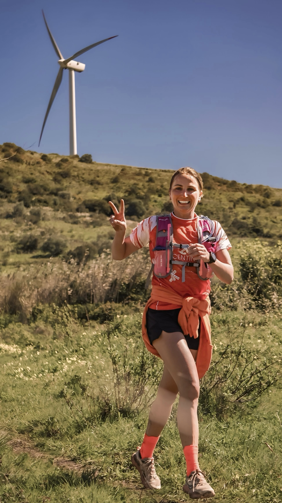

The Trilhos dos Calceteiros returns to Fanhões on March 15, 2026, for a sixth edition organised by the Faz-te aos Trilhos! association with support from the Fanhões Parish Council. Runners can choose between a 31K long trail, a 17K short trail, a 10K mini-trail or a 10K walk, with all routes crossing forest tracks and rural paths through Fanhões, São Julião do Tojal, Bucelas and Lousa.
This year’s race also doubles as a round of the Athletics Association of Lisbon’s Regional Trail Championship, adding a competitive edge to an event that has grown steadily since its debut. Last year’s fifth edition drew around 500 athletes, and organisers expect a similar turnout of roughly 450 entrants across the four distances in 2026.

Time limits are set at six hours for the 31K, five hours thirty minutes for the 17K and five hours fifteen minutes for the 10K trail, with the walking route closing after five hours. The race’s name honours the calceteiros, the traditional Portuguese cobblestone pavers whose craft shaped the villages the course passes through.
Image Media’s team, including photographers Fran Paulino and Leandro Rocha, was on the ground at the start line and out on the trails to cover the race.
Full galleries from Fanhões will be published on imagemedia.one in the days after the race, with participants able to find and buy their own photos once results are confirmed.